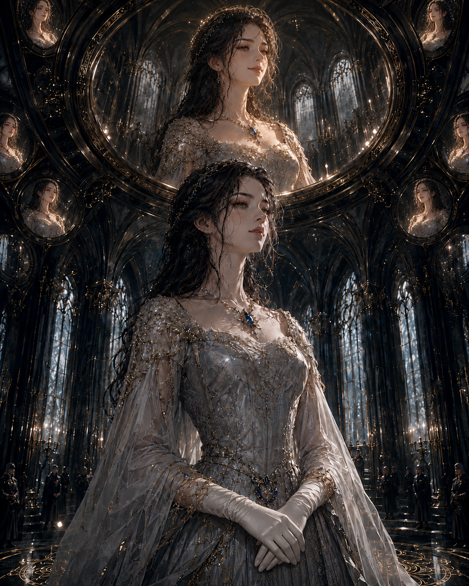
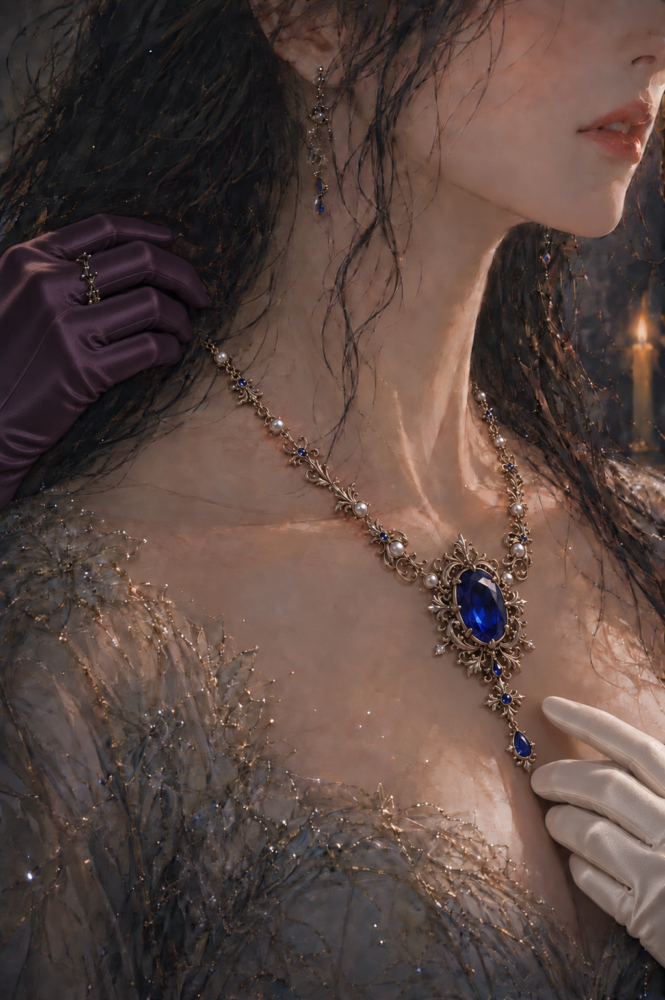

대전의 문이 열리자, 수백 개의 촛불 아래 사람들이 아이리스를 향해 일제히 몸을 숙였다.
그녀는 커런의 손을 잡은 채 대전으로 들어섰다.
걸을 때마다 사파이어가 가슴 위 한가운데에서 발걸음을 무겁게 했다. 조여 오는 드레스가 숨을 자꾸 붙잡았다.
‘인내. 품위. 절제.ʼ
평생을 되뇌어 온 세 단어가 아이리스의 고개를 조금 더 들어 올렸다.
그녀는 자신에게 쏟아지는 시선에, 몸에 밴 품위와 온화한 미소로 화답했다.
아이리스가 커런의 손을 놓고 한가운데 마련된 원형 문양 위에 올라서자 대전을 채우던 연주가 멈췄다.
에드먼드 왕과 세라핀 왕비는 높은 단상 위에 나란히 앉아 있었다.
아버지는 만족스러운 표정이었고, 어머니는 무릎 위에 서류를 얹어 둔 채 아이리스의 드레스 자락에서 머리끝으로 천천히 시선을 옮겼다.
눈길이 사파이어에 잠시 머물자, 세라핀의 입가가 아주 조금 부드러워졌다.
“아이리스 애시워스.”
기록관리부 수장 펜이 그녀의 이름을 불렀다.
그는 대전 오른편의 작은 단상 앞에서 아이리스의 지난 일 년이 적힌 두꺼운 장부를 양손에 들고 서 있었다.
“애시워스 왕가의 적법한 후계자이며, 다음 계승식을 통해 왕관을 이어받을 자.”
그의 목소리가 대전의 천장까지 닿았다.
천장을 뒤덮은 수십 개의 거울과 가운데 커다란 원형 거울은 아이리스의 얼굴만을 담아냈다.
그녀의 입가에는 매일 아침 완성했던, 지나치게 환하지도 얕지도 않은 미소가 걸려 있었다.
거울은 사람들이 알고 있는 그 얼굴을 실제보다 더 아름답게 돌려주었다.
“지난 일 년 동안 전하께서는 왕실의 품위를 한결같이 유지하셨으며, 백성을 향한 책무도 빠짐없이 수행하셨습니다.”
펜이 장부를 계속해서 읽어 내려갔다.
“지난 일 년의 기록에는, 아이리스 애시워스라는 이름과 거울이 비춘 인영 사이에 어긋남이 단 한 번도 없었습니다.”
그것은 최고의 찬사였다.
“거울의 판정을 청합니다.”
펜이 장부를 앞에 놓인 받침대 위에 내려놓자, 그 뒤에 서 있던 인영원의 대사제 칼리스타 렌이 앞으로 나왔다.
이마에서 광대까지 덮은 은가면 너머의 두 눈은 거울만을 보고 있었다.
대전 안의 시선들이 모두 천장의 원형 거울로 모였다.
아이리스를 비추던 거울의 인영 위로 금빛이 번졌다. 거울 속 그녀의 눈매는 더 온화해 보였고, 입술에는 품위를 잃지 않은 정확한 미소가 자리 잡았다.
흠결 하나 없는 완벽한 얼굴이었다.

칼리스타가 은가면 아래, 입가에 내려앉은 가는 주름을 거의 움직이지 않은 채 선언했다.
“아이리스 애시워스. 그 이름에 합당한 완전함을 인정합니다.”
펜의 펜촉이 장부 위를 사각거리며 움직였다.
그 뒤를 따라, 대전 안에 수백 개의 손이 부딪히는 소리가 울려 퍼졌다.
아이리스는 고개를 숙이며 인사했다.
“감사합니다.”
거울 속 깊어진 그녀의 미소가 더없이 빛났다.
“훌륭하구나.”
에드먼드 왕이 흡족한 목소리로 말했다.
“내년 계승식은 오늘보다 더 완벽할 것이다.”
아이리스는 고개를 들었다. 미소가 지나치게 기쁨을 드러내지 않도록 입가에 힘을 풀고, 자연스럽게 내려져 있던 두 손을 가지런히 모아 겸손을 표했다.
순간, 사파이어 아래 그녀의 심장이 한 번 불규칙하게 뛰었다. 숨을 멈추자 박동은 곧 제자리로 돌아왔다.
“전하께 축복을.”
“완벽한 후계자께 축복을.”
환호 속에서, 거울은 금빛으로 아이리스의 얼굴을 눈부시게 비췄다. 너무 아름다워서 자신과는 아무런 관계도 없는 것처럼 느껴질 만큼.
판정 의식이 끝나고 연주가 다시 시작되자, 주변에 서 있던 사람들이 한꺼번에 아이리스에게 다가왔다.
“역시 전하께서는 한결같은 모습입니다.”
“내년에는 역사상 가장 완벽한 계승식을 보게 되겠어요.”
“이졸데 전하께서 살아 계셨다면 무척 기뻐하셨을 것입니다.”
그 이름에 아이리스의 시선이 말을 건넨 이에게 멈췄다.
노년의 귀부인이었다. 그녀는 아이리스의 목에 걸린 사파이어를 바라보며 감상에 젖은 표정으로 말을 이었다.
“그분께 닿지 못했던 축복이 마침내 전하께 이어졌으니, 얼마나 다행스러운 일입니까.”
“감사합니다.”
오늘 처음 목에 건 목걸이를 그녀가 알고 있다는 사실을 미처 생각하기도 전에 말이 먼저 나왔다.
가볍게 인사하며 고개를 살짝 내렸다 들었을 때, 귀부인은 이미 물러나 아이리스의 시야에서 사라졌다.
그녀는 잠시 목걸이로 손을 올리려다, 조금 떨어진 뒤편에서 자신을 지켜보던 커런이 다가오는 것을 알아채고 다시 내렸다.
아이리스 앞에 선 그가 그녀의 목에 걸린 사파이어에 시선을 둔 채 미소를 띠며 말했다.
“아주 잘 어울립니다. 처음부터 전하의 것이었던 것처럼요.”
아이리스도 커런을 따라 미소 지었다.
사파이어는 여전히 무거웠고, 그 차가움이 심장까지 닿는 듯했다.
“아이리스 전하.”
오른쪽에서 익숙한 목소리가 들렸다. 그녀의 오랜 벗인 메이지 로웰이 사람들 사이를 가르며 걸어왔다.
그녀는 짙은 자주색 비단에 검은 진주와 작은 다이아몬드가 촘촘히 박힌 화려한 드레스를 입고, 길이가 다른 세 겹의 목걸이를 걸고 있었다.
거울이 아이리스만을 비추는 이름의 날이 아니었다면 가장 눈에 띄었을 것이다.
메이지는 그녀를 위아래로 천천히 살피다 가슴 한가운데 놓인 사파이어에 시선을 멈췄다.
“오늘은 누구도 전하에게서 눈을 떼지 못하겠네요.”
그녀가 웃으며 커런을 향해 몸을 돌려 예를 갖췄다.
“로웰 영애.”
커런이 짧게 인사했다.
“노윅 경. 오늘도 전하 곁을 든든히 지키고 계시네요.”
“이제 잠시 로웰 영애께 그 자리를 비켜 드려야 하는 건가요?”
“그럼 잠시 공주 전하를 모셔가도 될까요?”
“물론입니다.”
커런이 한 걸음 물러서며 짧게 고개를 끄덕였다. 메이지는 자연스럽게 아이리스의 팔짱을 끼고 사람들을 빠져나왔다.
“메이지. 어딜 가려는 거야?”
“잠시만요.”
메이지는 대전 옆 비어 있는 음악실 문을 열고 아이리스를 안으로 들인 뒤 조용히 문을 닫았다.
“무슨 일이야 메이지.”
“목을 좀 볼게요.”
“목은 왜?”
“목이 다 쓸려서 살갗이 붉어졌는데도 아픈지 모르는 거예요?”
목걸이의 무게가 누르는 느낌은 있었지만 아프지는 않았다. 그런 것은 언제나 중요한 게 아니었다.
“괜찮아.”
“괜찮은 사람은 그렇게 숨을 쉬지 않아요.”
메이지가 아이리스의 뒤로 다가가 손끝을 목걸이 잠금쇠에 조심스럽게 올렸다.

“풀지 마.”
메이지의 손이 멈췄다.
“잠시만 풀면 돼요. 여긴 아무도 전하를 보고 있지 않아요.”
사파이어는 무거웠고 차가웠으며, 분명 숨을 들이마실 때마다 가슴을 짓누르는 듯했다.
그런데도 지금 목걸이를 푸는 것은 잘 갖춰진 차림을 스스로 흐트러뜨리는 일처럼 느껴졌다
“그대로 둬.”
“아프면서도, 아프게 하는 물건을 더 걱정하는 거예요?”
“아프지 않아.”
“그렇다면 다행이고요…..”
그녀는 그 말을 믿지 않는다는 듯 무언가 더 말하려다 그만두었다.
“돌아가자, 사람들이 기다리고 있어.”
문을 열기 전, 메이지는 아이리스의 사파이어 목걸이를 살짝 밀어 붉어진 흔적 위에 바로 놓았다.
“이제 아무도 모를 거예요.”
두 사람은 다시 대전으로 돌아갔다. 대전 안 거울 속 아이리스의 얼굴은 조금도 달라지지 않았다.
사파이어는 정확한 자리에서 빛나고 있었다.
***
중앙 외곽의 어두운 창가 너머로 늦은 밤까지도 꺼지지 않는 왕궁의 불빛이 내려다보였다.
창틀에 몸을 기댄 채 서 있던 남자의 시선이 잠시 그 빛에 머물렀다.
‘아이리스 애시워스.ʼ
중앙의 완벽한 공주의 이름이 빛 위로 떠올랐다.
홀리스 베인은 시선을 거두고 창문을 닫았다.